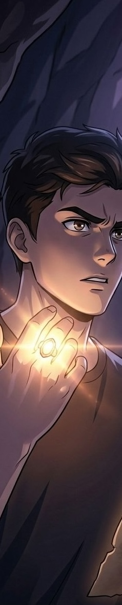

2032, En la tierra, específicamente en el país de Brasil, 4 amigos tenían una reunión relajada, tuvieron un picnic en el parque, mientras platicaban de la escuela y otros temas comunes. Esos cuatro amigos eran Alice, una niña de 17 años, Gabriel de 18, (el amigo más cercano de Alice porque se conocieron desde pequeños y vivían en la misma colonia), Helena, de 17, (la mejor amiga de Alice que conoció en la escuela) y Arthur, de 19 años, (uno de los vecinos de Alice y Gabriel y que va en la escuela con Helena y Alice).
Comenzaron a hablar sobre un libro que todos leyeron cuando iban en secundaria en clase de geografía, sobre cuevas e investigaciones de algunos fósiles de dinosaurios, que siempre ha sido un tema muy interesante para ellos. Terminaron su picnic y cada uno se fue a su casa. Alice al llegar a casa se dio cuenta de que su hermano menor le dejo una nota en su mesita de noche donde le decía que escapó de casa, porque tuvo una pelea fuerte con sus padres, ella comenzó a preocuparse ya que su hermano no le contestaba el celular y al revisar su cuarto vio su teléfono encima de la cama.
Sus padres habían salido de viaje el día anterior, ya que su padre tenía que visitar una construcción en Canadá y ella comenzó a llorar, trato de llamar a su madre, luego a su padre, “sin respuesta, sin conexión”. Quedó tan destrozada que solo se recostó en su cama y se quedo dormida. Comenzó a vibrar su teléfono, se dio cuenta que era de noche, vio que tenía 2 llamadas perdidas de Gabriel, le devolvió la llamada y él le pidió quedarse en su casa, ya que sus padres peleaban muy fuerte y el ya no lo soportaba más.
Gabriel toco la puerta, Alice bajo y abrió, “Hola, Gabo, ¿Cómo te sientes?” le dijo ella, el desconsolado y triste le contesto, que mejor, porque ya estaba en su lugar seguro, ella sonrió y le ofreció pasar la noche en la habitación de su hermano, el pregunto por el pequeño Kai y ella le conto todo lo que había pasado. El la abrazó y cada uno se fue a dormir a su respectivo lugar.
“ALI, ALI…despierta...”, Alice se levantó brincando y con el corazón acelerado, Gabriel estaba parado por un lado de su cama. “¿Qué pasó Gaby?”, él le dijo que no podía dormir y que se quedó viendo su teléfono hasta que le apareció una alerta mundial, un video. “ALERTA, en las últimas horas ha caído un meteorito en el estado de Montreal, los expertos dicen que se ven algunas imágenes de meteoritos directo a la tierra y es posible que sigan cayendo. ¡ESTEN ALERTA!, si ven más noticias, cámbiense de locación, para estar seguros.” Ali se quedo muda durante casi 1 minuto, hasta que por fin reacciono, lo primero que hizo fue revisar su teléfono, 3 notificaciones, “Hola hija, perdón por no contestar ya llegamos a Alberta, Canadá. 12:54 am” “¿Por qué nos llamaste, por cierto, todo bien tú y tu hermano? 12:55” “¿Hija ya viste las noticias?, se sintió un fuerte temblor, pero no te preocupes por nosotros estén al pendiente tú y tu hermano a las alertas, y ya por último ahorita estoy en camino en donde nos quedaremos tu padre y yo, pero ya no tendré conexión en el Airbnb hasta que volvamos dentro de 2 días, cuídense, los amo y su papa también los ama. 2:23am”, “Yo también los amo”, susurro Alice a su pantalla, comenzó a llorar y abrazo a Gabriel, “solo desearía que mamá supiera lo de mi hermano para que regresara en este momento, quisiera saber en donde se metió ese niño”, “tranquila Al, yo te ayudo a buscarlo, no puede estar muy lejos, ¿no se habrá ido con alguno de sus amigos o con tus abuelos?”, Ella recordó que hace poco había venido un amigo de su hermano a la casa y que lo habían regresado por la noche a su hogar.
Tomo sus cosas y le dijo a Gabriel que, si no era mucha molestia, la llevara manejando hasta su destino, el sin dudarlo la llevo, no pasaron más de 15 min y llegaron, toco la puerta y salió una mujer amable con el pelo negro y corto, preguntó que se les ofrecía, “Hola señora, ¿usted es la madre de Moacir?” “Así es, ¿qué pasa?” “Bueno, me pregunta si no estaba mi hermano dentro” “Ahhh, ¿Kaique?, tú debes de ser su hermana verdad?, no puedo creer su parecido, son como gemelos” “Gracias, solo que tengo un poco prisa, ¿pudiera llamarle?”, “Claro que si, enseguida viene”, Salió Kaique sin decir ni una palabra, en ningún momento cruzaron miradas, se despidieron los dos y se subieron al carro de Gabriel, “Kaique…no se te vuelva a ocurrir irte sin avisar, me dejaste muy preocupada, ¿acaso no viste todo lo que esta pasando?” “Lo siento, no le digas a mamá ni a papá por favor, estarían más decepcionados de mí más de lo que ya están” “No diré nada si me prometes no volverte a ir asi” “Lo prometo”, En el viaje de regreso todos fueron callados. Al volver a casa, vio que fuera de su puerta estaban Helena y Arthur, se veían desesperados.
Todos se bajaron del auto y Alice fue directo a donde se encontraban sus amigos y en eso llego Gabriel, “Gracias a Dios llegaste, vimos las noticias, ¿Están bien?”, “Gracias por preguntar pasen y les contare todo”, ella les dijo lo que había pasado desde que llego a casa después del picnic, todos se veían más aliviados, y hasta su hermano conto porque se había ido, resulto que el día anterior cuando Alice estaba en la escuela la directora de la escuela de él, llamo a sus padres porque decía que había un rumor de que él podía parar el tiempo en periodos largos o ver cosas que los demás no podía, la directora les dijo que no era bueno que él le estuviera mintiendo a sus compañeros y difundiendo ideas erróneas, que hablaran con él y cuando estuviera consciente de lo que estaba haciendo podía volver a la escuela, al volver a casa sus papas quisieron hacerle ver que eso es imposible que no estuviera asustando a sus compañeros o querer destacar con mentiras. Pero el llorando les dijo que era en serio, que a veces sentía cosas extrañas o escuchaba voces y que sin quererlo se detenía el tiempo y el era el único que se podía mover, aunque aun no lograba descifrar como es que lo hacía, así que de tan injusto que le pareció que no le creyeran las personas en las que más confiaba, ideo el plan de irse sin que nadie supiera.
Al inicio todos se quedaron procesando eso, pero su Alice fue la primera en romper el silencio “Kai, sabes que soy tu hermana, júrame por favor que es cierto lo que estás diciendo y te creeré sin importar nada” “Te lo juro hermana, sabes que no soy el tipo de niño que miente siempre, además sería muy ridículo lo que estoy diciendo si estuviera mintiendo.” A todos les cobro sentido eso y empezaron a decirle que era fascinante y que pronto iba a encontrar la forma de controlarlo. Arthur dijo serio “Te recomiendo que lo mantengas en secreto que esto solo quede como una verdad entre nosotros, y que los demás te van a ver como un tonto, pero cuando uses tus poderes ellos serán los tontos de ni darse cuenta de lo estás haciendo”, Kai dijo que era un gran consejo y lo aplicaría.
De repente “ALERTA DE ULTIMO MOMENTO, la siguiente localización del meteorito será en Cuba”, se escuchaba en los altavoces de la colonia y en las televisores, hasta que paro y Gabriel dijo, “Que bueno que no será aquí pero, no les gustaría investigar más porque cae ahí o como se queda el lugar de la catástrofe, recuerdan que en el libro que leímos decía que se formaban cuevas de algunos meteoritos, sería bueno visitar el lugar”, todos se quedaron pensando pero creyeron que era un poco descabellado viajar hasta allá y como lo pagarían, de nuevo Gabo sin dudarlo comento “Chicos lo digo en serio, yo tengo un ahorro de donde podríamos sustentar los vuelos y además nos llevaría más cerca de tus padres Al, y de ahí tal vez tus padres puedan ir a donde nos quedaremos y mi papa tiene una casa en Quebec, nos queda cerca de Montreal como a 2 horas” “Bueno a si no suena tan descabellado” dijo Helena, pero Alice comento que no podía comunicarse con sus papas hasta que volvieran, eso sería un inconveniente.
Hasta que su hermano dijo “No me acordaba, pero, hace un año papa me dio un aparato que serviría para comunicarnos en cualquier lugar y no necesita conexión, la verdad es que nunca pensé utilizarlo y lo guarde en el sótano, lo iré a buscar, además dijo papa que el siempre llevaría el suyo” “Pues esperemos que si lo tenga con el ahora mismo” dijo Arthur. Kai regreso, todos vieron que era como el teclado de un Nokia con una pantalla que estaba en horizontal y ahí se veían los mensajes que recibían del otro. “Y de que siglo será eso, parece como si fuera algo con lo que hablaban en la guerra” dijo Gabo. “Será fácil que le entiendan dijo Kai, solo escribes el mensaje que quieres mandar y le picas en el circulo con una palomita, para enviarlo y le llegara a papá, solo que tiene un límite de 20 palabras”, asi que escribieron, “ALICE, KAI, HELENA, ARTHUR, GABRIEL, VAMOS A QUEBEC, CASA DE GABO LOS VEMOS ALLÁ”, además ellos tenían una ventaja, porque sus papas ya habían visitado esa casa en vacaciones de invierno, porque como Gabriel y Ali eran amigos, sus papas solían salir de vacaciones juntos todos los años.
1 hora después, comenzó a sonar un pitido de 3 tiempos, “recibimos un mensaje de papá chicos”, todos estaban en sus cosas y corrieron a la sala, el mensaje decía, “QUE!, TENDRAN SUS RAZONES ASI QUE ALLÁ LOS VEMOS.” Gabo durante esa hora había ido a su casa y agarro su billetera con sus ahorros, fue a poner el dinero en su tarjeta al banco y regreso después de que llegara el mensaje, así que ya con el “permiso” de ir, Ali le presto su computadora y compraron los boletos de avión, se irían mañana a las 3:20am, así que tenían que levantarse mas temprano. Hicieron sus maletas, pusieron sus alarmas y todos durmieron juntos en el piso de la sala, como una pijamada improvisada.
2:15 am, se levantaron todos preparados, solo que iban a hacer un breve desayuno en la cocina antes de irse, pan francés con mantequilla, queso o jamón, dependiendo lo que le gustara a cada uno. Terminaron de comer y subieron sus maletas al carro de Gaby, iban todos muy callados y con sueño, pero con altas expectativas de conocer algo nuevo e investigar algo inexplicable. Llegaron al aeropuerto, bajaron sus maletas y se encaminaron a la puerta de entrada al avión. Por delante tenían un viaje de 12 horas hasta llegar a Quebec.
Durante su viaje en avión, tuvieron que repartirse los asientos; estaban juntos Arthur y Kaique, Alice y Gabriel, y Helena se ofreció a ir sola, ya que no le agradaba mucho conversar y prefirió descansar. Al inicio, los pasajeros iban platicando, sin embargo, con el paso de cinco horas las voces se fueron apagando; algunos veían películas, como Arthur y Kaique. En cambio, Gabo y Ali iban muy contentos, ya que hacía años que no conversaban tanto tiempo seguido.
Gabriel le contó a Alice sobre una chica que conoció en su escuela; decía que siempre lo molestaba y le insistía para que le hiciera caso, aunque a él nunca le llamó la atención. Le confesó a su amiga que desearía que estuvieran en la misma escuela para evitar ese tipo de situaciones, ya que, por lo linda que era Alice, muchos pensarían que era su novia. Ella se sonrojó y le dijo que no dijera tonterías, pero su mejor amigo no estaba tan equivocado: era una chica de ojos azules y cabello rizado.
No volvieron a tocar el tema durante las siguientes dos horas, hasta que Helena despertó y, al dirigirse al baño, se encontró con ellos. Comentó que parecían una pareja recién formada, ya que ambos se veían muy nerviosos. Solo se rieron; Helena siguió su camino y Alice dijo: “Ni cómo decirle que no”. Gabo se quedó sorprendido: “¿Qué… acabas de decir?”. “Solo digo que sí, llevamos años conviviendo; sería raro que nadie pensara eso, ¿no?”, respondió ella. Gabriel estuvo de acuerdo, aunque no podía creer que Alice mencionara algo así, ya que en todo el tiempo que llevaban conociéndose nunca había salido ese tema. En su mente pensó: “Tal vez algo ha cambiado”.
Al llegar al aeropuerto recogieron sus maletas, sin embargo, la de Arthur no llegaba y no llegaba, pregunto por ella y le dijeron que justo estaba en revisión porque en el otro aeropuerto un objeto paso desapercibido dentro, así que si todo salía bien podían irse en 1 hora y si no, él tendría que quedarse en caso investigación durante 36 horas. Todos se preocuparon y se preguntaron que podría ser esa cosa que los estuviera deteniendo, Arthur les dijo que lo más seguro era que tuviera dentro un anillo de piedra linetru, una rara especie de gema descubierta en los años 40´s, que durante generaciones siempre había llamado la atención de las autoridades, había sido de sus tatarabuelos y había llegado a ser suyo hasta hace unos pocos años, pero como tenía mucho valor para él, siempre lo cargaba sin importar donde estuviera, Helena comento que fuera lo que sea estarían ahí para él. Pasó aproximadamente 1 hora y 15 min, cuando un oficial se acercó a su grupito para darles la noticia de que todo estaba bien, solo que, si se observaba algún movimiento sospechoso acerca de un tema financiero, o terrorismo durante su estancia en el país tendrían que interrogarlos.
Estaban advertidos, pero felices de saber que podrían ir a descansar. Kaique se veía muy triste, Ali se dio cuenta de tal situación, abrazo su hermanito, ya que, aunque fuera un niño fuerte también sabía que su corazón era débil y más en esa situación de no saber nada de sus padres, ella lo tranquilizó diciéndole que solo serian unas horas más para que su padre terminara de trabajar y los verían al siguiente día por la mañana y por eso tenía que ser positivo. Ya que Gabo había rentado un carro para trasladarse, recogió a sus amigos, acomodaron el equipaje y manejaron hasta la casa de su amigo, lo primero que se encontraron al estacionarse fue el carro de sus padres, corrieron tan rápido hasta la puerta de su carro y observaron a sus padres descansando, asumieron que llevaban bastante tiempo esperándolos y empezaron a tocar la ventana como locos, se levantaron sorprendidos, quitaron el seguro y en un instante estaban todos llorando y abrazados.
Después de aquel momento tan emotivo, entraron a la casa y decidieron descansar por el desgaste de energía en su trayectoria, así que antes de dormir, Gabriel que desde el inicio su propósito fue investigar aquellos lugares, propuso al día siguiente salir a las 5am para no encontrar tanta gente y analizar algunos movimientos de la seguridad, ya que no sería fácil evitarlos. Todos se fueron a sus habitaciones. Alice tuvo insomnio y decidió salir en silencio a ver las estrellas ya que el paisaje ahí era hermoso, abrió la puerta del cuarto y trato de ir en puntitas hasta salir, pero antes de la puerta principal escuchó a alguien hablar, se asomó por la ventana y vio a Arthur diciendo cosas extrañas, parecía otro idioma y tenía en su dedo ese anillo que había dicho, era una piedra muy brillante y la estaba poniendo directo en la luz de luna que caía del cielo, parecía algo como ancestral pero decidió dejarlo así, antes de salir actuó normal como si no hubiera visto nada, abrió la puerta y él se dio cuenta de su presencia dejó de hacer tal acción y la saludo como normalmente, él le comento “¿Una noche pesada cierto?”, ella asintió suavemente y lo abrazó como normalmente lo hacía y con más intenciones ahora, ya que se sentía un poco ansiosa por todo lo que estaba pasando en el mundo, se hacía muchas preguntas y solo quería que todo volviera a la normalidad, hablaron un rato sobre el tema y que harían en situaciones hipotéticas ridículas pero posibles al mismo tiempo, como qué pasaría si les cae un meteorito encima, pero dijeron que sería la muerte más increíble que tendrían si así fuera, después de unas 3 horas decidieron volver a sus habitaciones y por fin pudieron dormir.
Se levantaron a las 4:30am y se arreglaron, cargaron algunos snacks y se fueron hasta la ubicación del meteorito que marcaba una página de noticias y llegaron, se dieron cuenta de que no había nadie vigilando, se les hizo muy extraño, así que todavía les dio más curiosidad entrar, el lugar era como un plato hondo gigante; Dieron un vuelta para inspeccionar y vieron un pequeño túnel en una de las paredes altas del espacio, era bastante reducido y entraron agachados y vieron que los túneles tenían hoyos en la parte de arriba para que se iluminara el camino, eso ya era extraño porque parecían intencionales pero a la vez eran disparejos y no seguían una distancia ni un tamaño, así que prefirieron ignorarlos como si hubieran sido grietas muy profundas.
Siguieron avanzando durante bastante rato sin encontrar nada, Kaique se cansó rápido y juntos se sentaron a comer los snacks, platicaron un rato Ali estaba contando que le daba un poco de miedo estar ahí, pero era interesante ver los extenso que era y solo había una dirección para caminar, en eso PUM un ruido, se escuchaba una pisada fuerte, esperaron otro minuto, pero no lo lograron volver a escuchar así que siguieron en lo suyo, estaban juntando todo para continuar su trayectoria y de nuevo, pero esto ya no se escuchaba como una pisada, era un llanto fuerte como un grito grave, pero constante, se quedaron inmóviles y la mama de Alice dijo que tenían que continuar y si encontraban algo peligroso regresarían de inmediato, se dieron cuenta que Kaique no estaba, era raro, y decidieron regresar a buscarlo, Arthur dijo que iría y buscaría al chico, se quedarían esperándolos afuera una vez que ya terminaran de investigar.
Vieron una luz naranja a casi 6 metros de ellos, corrieron, pasaron la entrada, era un lugar muy natural, un manantial, pero ahí no vivía cualquier animal, si no que había muchos huevos con manchas de destinitos colores, “ABAJO TODOS” Gabriel gritó, era criatura que parecía ser un “¿Dinosaurio?” dijo Helena, “no puede ser” como era posible que el libro que habían leído fuera una realidad, “Ahora veo por qué decían que el autor consumía cosas raras cuando escribía” dijo Alice, el lugar parecía sacado de un sueño, mientras más lo veían más creaturas encontraban, como triceratops, estegosaurio, se dieron cuenta de que los dinosaurios eran más grandes de lo que alguna vez se lo imaginaron, en eso un rugido, bastante agudo en comparación al anterior que oyeron unos minutos atrás, era un T-Rex, cuando hicieron contacto visual con él, empezó a correr hacia ellos, pensaron que era su fin, pero en realidad la creatura solo quería jugar.
Pasaron mucho tiempo dentro hasta que encontraron unas estructuras en forma de cilindro, eran demasiadas, ahí encontraron a un personaje que se hacía llamar Ninkal, era como un humano, pero con escamas de dinosaurio “mucho gusto” dijo con firmeza el padre de Ali, “¿que los trae por acá?”, ellos contaron de donde venían y que es lo que había pasado, como fue que se metieron ahí y Alice solo por agregar quiso decir lo que su hermano contó acerca de sus poderes. Ninkal se quedó mudo, “¿cómo es que no lo mencionaron antes?, es la pieza que nos falta para poder salir de aquí” ellos preguntaron y les dijo “durante años he sido el representante de estas creaturas, hemos estado siempre escondidos en este lugar, hasta que hace poco cayo algo y salí a investigar, parecía una gran roca, advertí a mis dinosaurios, ya que en este libro, (era el libro que leyeron en secundaria), este diario no es cualquiera, es de hace mucho tiempo, solo el que reine la tribu puede descifrar una página secreta y esta dice: cuando del cielo caiga un meteorito, es porque el elegido ha venido, si no se encentra a tiempo los Nijos lo sacrificarán”.
“¿Los Nijos?” dijo Gabo, “Ahh si es nuestra tribu enemiga, se supone que buscan a su Kaique, y existen hace años, pero se esconden entre los humanos para pasar desapercibidos, hace poco se dio a conocer un nuevo Nijo, bastante joven para ser sinceros, son creaturas que usan la luz de Luna para cargarse y terminan con la vida del elegido así es como nos debilitamos y su objetivo es extinguirnos” “Ohh, no puede ser”, murmuró Alice, “lo que pasa es que ayer no pude dormir, así que me levanté para ver las estrellas afuera, escuche ruidos mientras quería salir por la puerta y me asome por la ventana y vi a Arthur usar la luz de Luna para iluminar el anillo por el que lo detuvieron en el aeropuerto”, “¡QUE ESTAMOS ESPERANDO!”, dijo Gabriel, Ninkal se quedó, ya que no sabía a lo que se referían, pero para la mala suerte de los demás ya habían entendido todo lo que había planeado Arthur, ni si quiera sabían si ese era su nombre real, al llegar a la salida solo estaba Kai tirado en el suelo.
FIN